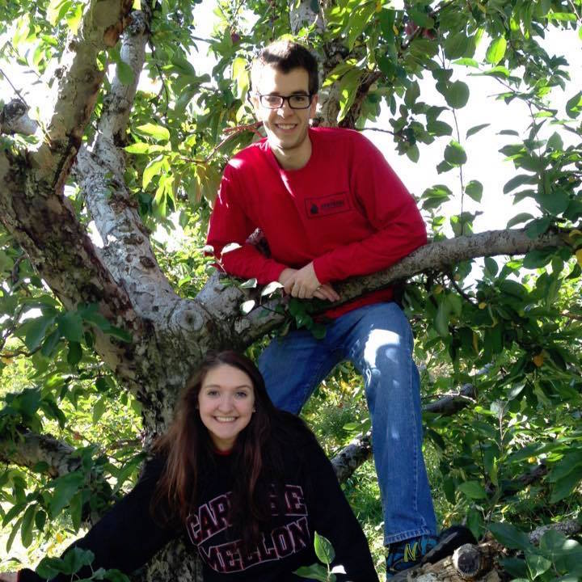
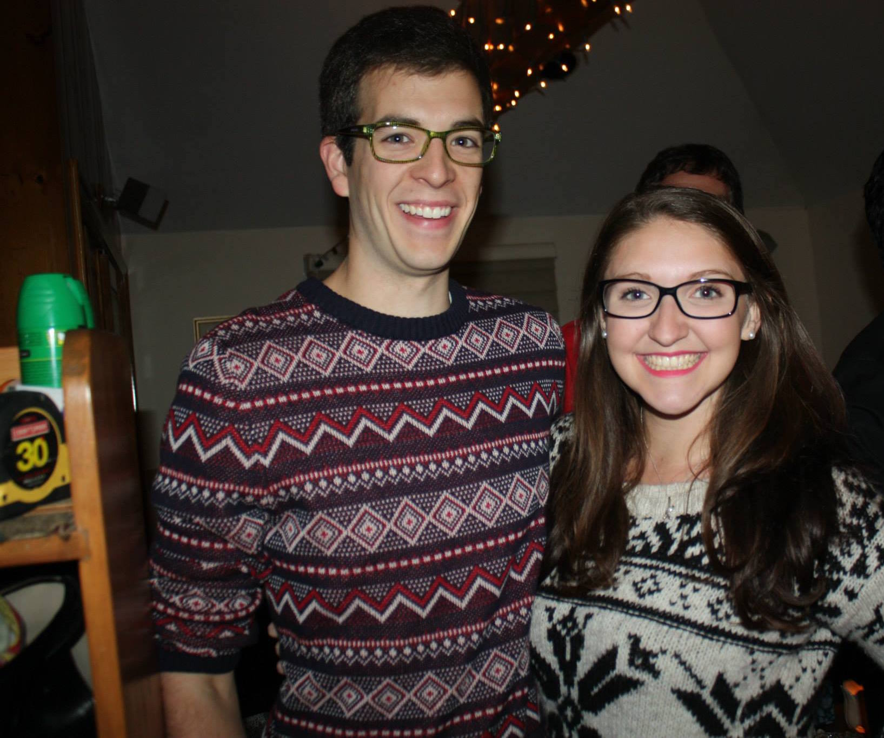
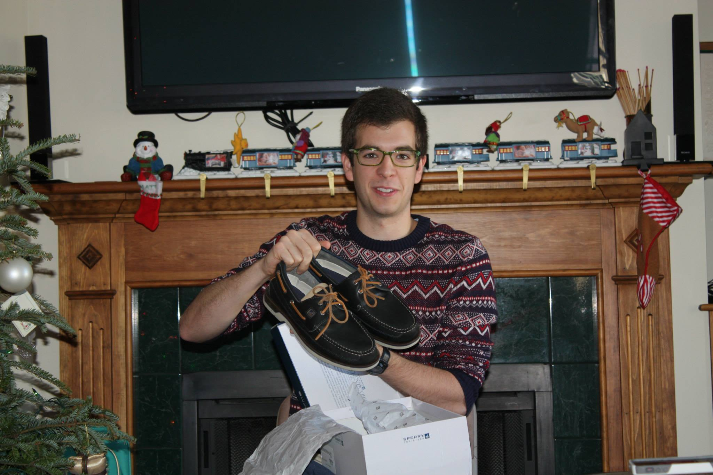
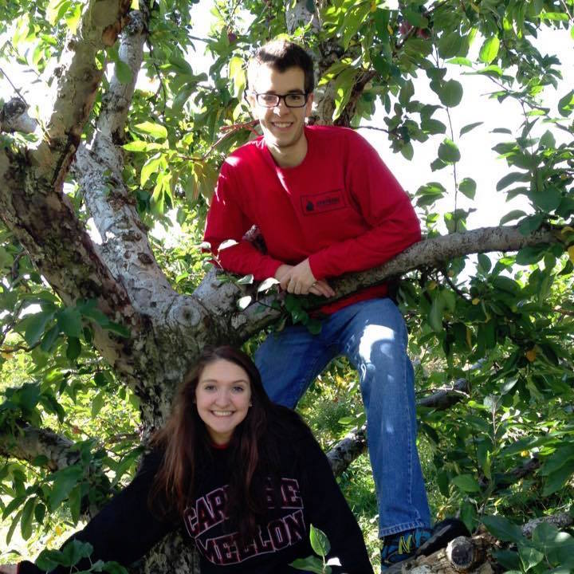
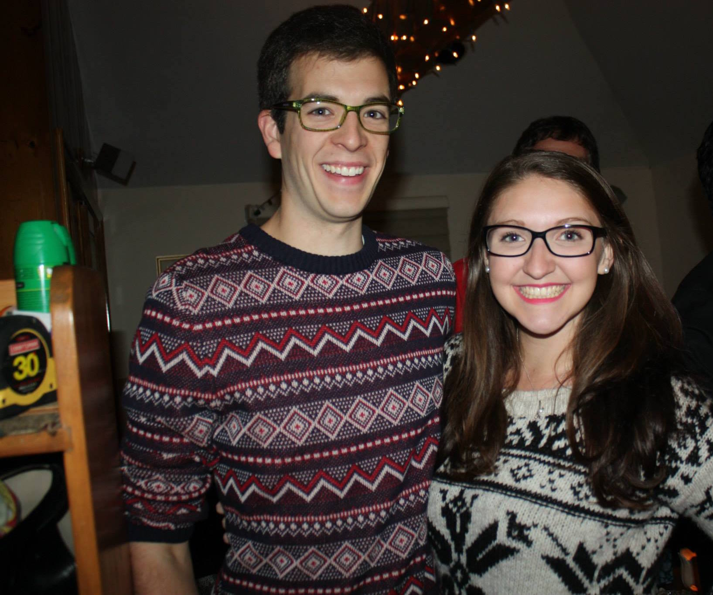
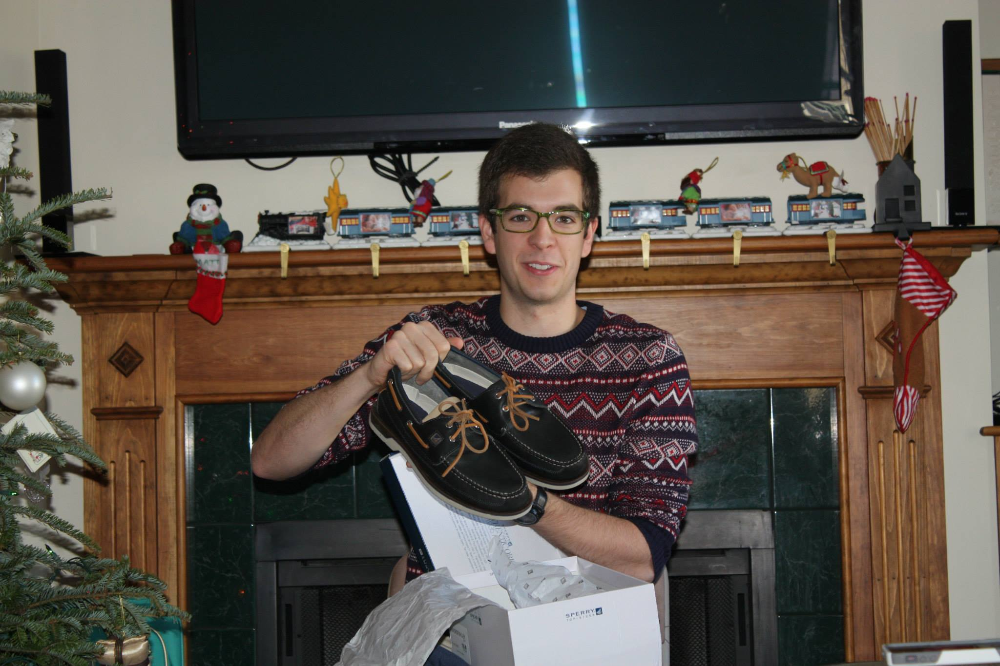

| Intro. to Electrical and Computer Engin. |
Fall 2013 |
Intro to CMOS design, covered from logic gates to RAM |
| Engineering Career Seminar |
Fall 2013 |
Basics of career networking and career fair preparation |
| Calculus II |
Fall 2013 |
Derivitices, integration, sequences, series, and power series. Taylor and MacLaurin series. |
| General Physics I |
Fall 2013 |
Analysis of classical motion, including kinematics, force, energy, and linear momentum. |
| Intro Problem Solving W/Comp |
Spring 2014 |
Programming course using Java covering data types to data abstraction to inheritance. |
| ST-ECE Systems Appreciation |
Spring 2014 |
Seminar for understanding how modern systems operate |
| Intro Linear Algebra |
Spring 2014 |
Linear algebra course covering up to eigenvalues and orthogonalization |
| General Physics II |
Spring 2014 |
Heat, kinetic theory, first and second laws of thermodynamics. Comprehensive study of electricity and magnetism from Coulomb's law to AmpEre's law. Applications to basic circuits and ending with AC circuits. |
| Circuit Analysis I |
Fall 2014 |
Mathematical models for analog circuit elements. Basic circuit laws and network theorems applied to dc, transient, and steady-state response of first- and second-order circuits. Modeling circuit responses using differential equations and the Laplace transform. Solving RLC networks in both the time and frequency domains. Computer projects and circuit simulations using MATLAB, Excel, and PSpice. |
| Data Structures & Algorithms |
Fall 2014 |
Data structures course using the Java programming language. Basic mathematical, logical, and programming concepts relevant to description and manipulation of information structures such as arrays, lists, trees, graphs, and files; the underlying principles of algorithm design and analysis applied to sorting and searching problems. |
| Multivariate Calculus |
Fall 2014 |
Techniques of calculus in two and three dimensions. Vectors, partial derivatives, multiple integrals, line integrals |
| Ordinary Differential Equation |
Fall 2014 |
Ordinary differential equations.First and second order linear differential equations, systems of linear differential equations, Laplace transform, numerical methods, applications. |
| Intro. to Computation |
Spring 2015 |
Discrete mathematics with logic, elementary number theory, proof by induction, recursion on trees, search algorithms, finite state machines, and a bit of computability. |
| Circuit Analysis II |
Spring 2015 |
Analysis techniques for ac circuits, frequency response, resonance, Bode plots, phasor representation of sinusoidal steady-state systems, complex frequency domain, transfer functions. MOSFETs as amplifiers; operational amplifiers. Transformers, two-port networks, Fourier series. Lab includes circuit hardware and PSPICE simulation experiments. |
| Hardware Organization & Design |
Spring 2015 |
Computer abstractions and technology, performance evaluation, instruction set architectures, computer arithmetic, pipelining, memory systems, and interfacing. Laboratory assignments will include the use of hardware description languages, machine languages and assembly languages. |
| Signals and Systems |
Fall 2015 |
Basic theory behind a further study of communication theory and systems, control theory and systems, signal processing, microwave and radar systems, networking and almost all disciplines of electrical and computer systems engineering. |
| Electronics I |
Fall 2015 |
Use of nonlinear devices such as diodes, field effect transistors (FETs), and bipolar junction transistors (BJTs) in the design of simple analog and digital circuits. Design projects make use of PSPICE. |
| Computer Syst Lab I |
Fall 2015 |
Design and analysis of digital computer (sub)systems, including sequential controllers, asynchronous system interfacing, bus arbitration, static and dynamic memory design, and microprogrammed microprocessor design. Use of hardware description languages and programmable logic. Breadboarding and use of diagnostic equipment. |
| Software Intensive Engineering |
Fall 2015 |
Theoretical and practical foundations for engineering the production of contemporary and future software intensive systems. Advanced engineering problem solving concepts and skills enabled by means of state of the art modeling and testing tools. Provides the basis for the analysis and co-design of complex hardware and software systems. |
| ECE Junior Seminar |
Spring 2016 |
Overview of the electrical and computer engineering field, including introduction to various subdisciplines and the corresponding upper-level ECE courses. |
| Intro. Probability & Random Proccesses |
Spring 2016 |
Probability space, conditional probability, Bayes theorem. Combinatorial analysis. Random variables (r.v.'s), distribution and density functions. Expected value, moments, characteristic function. Function of r.v.'s, Multiple r.v.'s, conditional distributions, independent r.v.'s. Multivariate Gaussian r.v.'s. Parameter estimation, confidence intervals, hypothesis testing. Introduction to random processes: mean, autocorrelation, power spectral density. |
| Computer Syst Lab II |
Spring 2016 |
Advanced computer systems engineering. CISC and RISC microprocessors, microcontrollers and their role in embedded systems. Integration of hardware and software, assembly language, memory systems, programmable logic, and I/O systems. Design methodologies. Manufacturing issues. Advanced diagnostic techniques. Project management. |
| Computer Networks & Internet |
Spring 2016 |
Explores the principles of computer networking and how the theoretical principles are implemented in practice. Introduction to concepts, principles, and practice of computer communication networks and the Internet with examples from existing architectures, protocols and standards. Emphasis on physical layer communication, data link layer protocols, routing protocols, transport layer protocols, application layer programming, network management, network security and wireless networks. |
| Senior Design Project I |
Fall 2016 |
The course requires students to work in small design teams to solve a significant engineering problem. Students develop, design, and implement a solution to the engineering problem in conjunction with a faculty advisor. The course reinforces principles of the engineering design process and serves as a capstone for electrical and computer engineering knowledge obtained in the ECE curriculum. The consideration of the ethical and social implications of technology and the basic concepts of business are also aspects of the course. Each student design team is expected to present information related to their project in both written and oral formats. Preliminary paper design is followed by implementation in the lab using digital and analog hardware design techniques and through software engineering. It is expected that a complete or partially working system will be demonstrated at the end of the course. |
| Trustworthy Computing |
Fall 2016 |
Introduces the fundamentals of network security as well as provides a practical survey of network security applications and standards as implemented on the Internet and for corporate networks. |
| Feedback Control Systems |
Fall 2016 |
With lab. Time domain and frequency domain analysis and synthesis techniques for linear continuous-time feedback control systems. Topics include benefits and costs of feedback, modeling of dynamic systems,steady-state and transient performance, stability, PID control, root locus, frequency response, Nyquist stability cri-terion, and introduction to loop-shaping. |
| Image Processing |
Fall 2016 |
2D and 3D image acquisition and display, color representations, image sampling, point operations, linear image filtering and correlation, image transforms, image enhancement, image restoration and denoising, and image analysis. |
 




